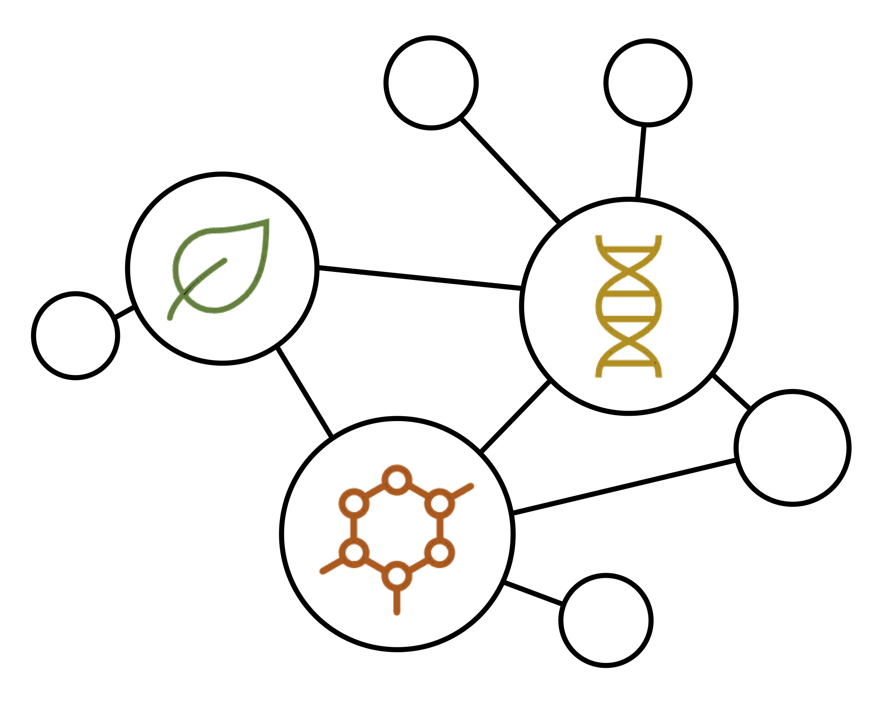

research program and aims

Plants are rooted in the ground and cannot run away from challenges — instead, they use complex metabolic networks to generate massive arrays of bioactive chemicals and natural biocomposites. With these they colonize deserts, transform Earth's atmosphere, and live for thousands of years. Organic chemists have determined the structures of many thousands of plant chemicals, but biosynthetic pathways to only a handful are known. In the Busta lab, we are closing this gap by uniting analytical chemistry with DNA and RNA sequence data and language model ('artificial intelligence') technologies. Three questions drive us:
Scientific articles compile results from decades of effort by researchers worldwide. In phytochemistry, these efforts manifest as data describing the occurrence of specific compounds across the plant tree of life. We are exploring the potential of transformer-based language models to extract and systematize this data at scale. Using thousands of manually annotated abstracts, we have measured the ability of language models to identify chemical occurrence reports, confirm known lineage-specific distributions, and uncover previously unrecognized hotspots of bioactive compounds. Current projects include:
In the long term, we envision language model-enabled organization, archival, and preservation of plant chemical research results for large-scale, community-wide analysis.
Chemical diversity is a hallmark of plant traits, connected to critical genomic events including horizontal gene transfer, gene clustering, and whole genome duplication. Integrating plant genomic data with chemical profiles has helped predict diversity hotspots, revealed genetic mechanisms of natural product synthesis, and uncovered unique metabolic pathways with industrial or agricultural potential. We are both conducting analyses of chemical occurrence in a phylogenetic context and building tools to make this work more accessible. Current projects include:
Looking ahead, we plan to build a phylochemical atlas as a community resource, combining language model-extracted occurrence data with genomic datasets to enable predictive identification of lineages with economically important metabolism.
Virtually all land plants coat themselves with waxes to prevent nonstomatal water loss, but some species accumulate such large amounts that wax is visible to the naked eye as a white "bloom." Epidermal cells in multiple plant lineages have independently developed the ability to synthesize hydrophobic natural products in massive quantities and export them to the surface, where they can be harvested. This phenomenon has the potential to inspire biotechnological systems designed to produce natural products at scale. Current projects include:
Our long-term goal is to use fundamental knowledge of wax biosynthesis and bloom induction to inform synthetic biology systems for producing high-value hydrophobic natural products.